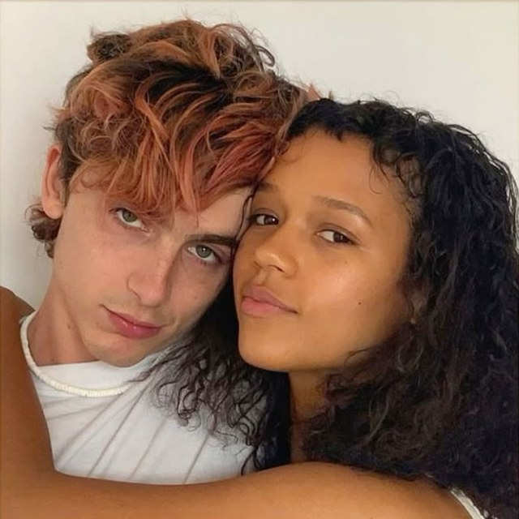
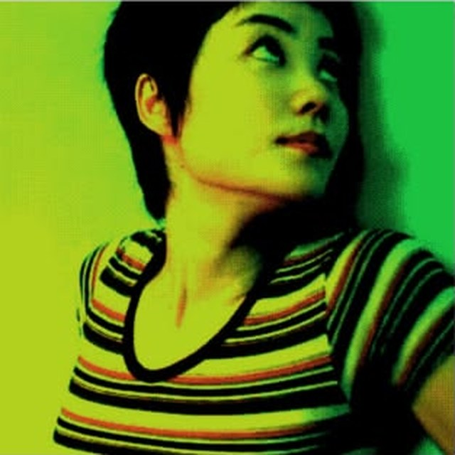
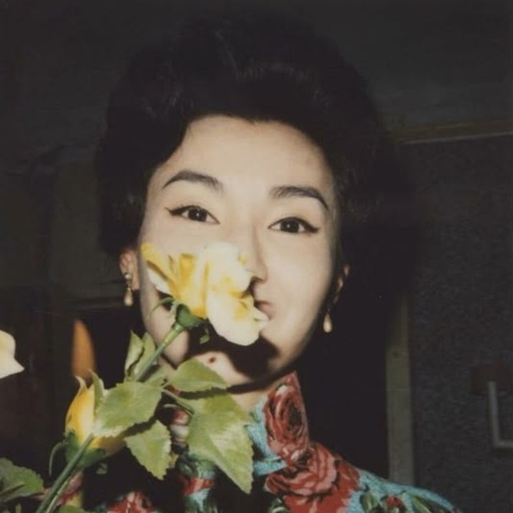
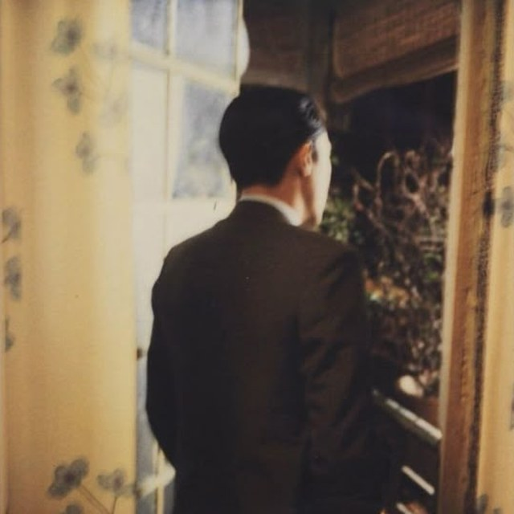
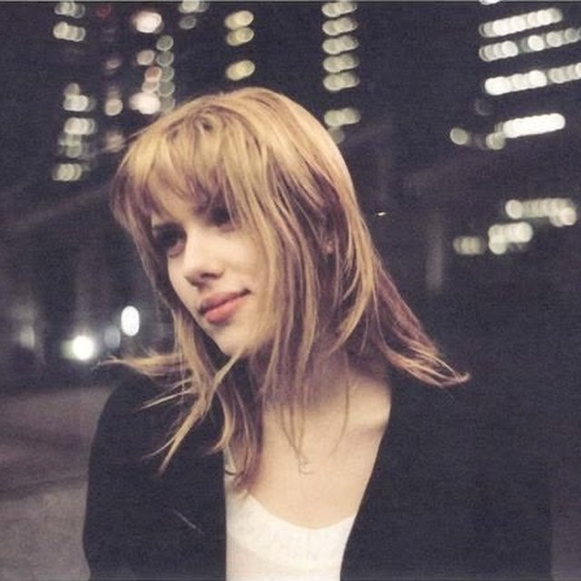
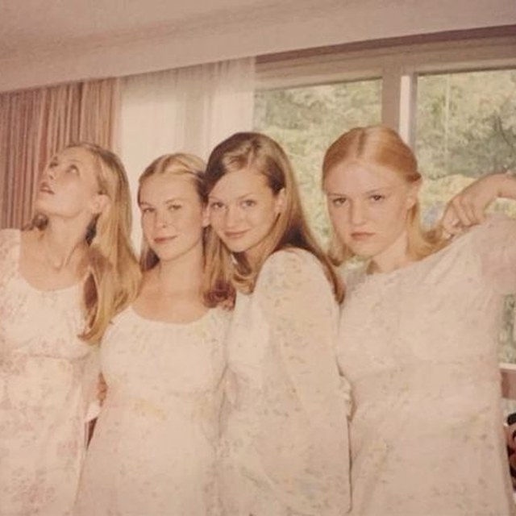

¡Hola! Soy Isabella Prieto Sarabanda y mi sueño es ser director de cine. Me gusta ser quien está detrás de cámaras: dirigir, escribir guiones y filmar. No me gusta actuar, me gusta construir la historia desde atrás.
Tengo una visión muy concreta de las películas que quiero hacer: historias que hablan de lo que casi nunca se habla. Me encantan las películas con mucha emoción, el stop motion y el cine japonés.
Estoy terminando el bachillerato y mi meta es estudiar cine en Londres y después en Escocia.
Encuentra las palabras escondidas en la cuadrícula para descubrir quién soy y hacia dónde voy.

Bones and All, 2022Luca Guadagnino

Chungking Express, 1994Wong Kar-wai

In the Mood for Love, 2000Wong Kar-wai

In the Mood for Love, 2000Wong Kar-wai

Lost in Translation, 2003Sofia Coppola

The Virgin Suicides, 1999Sofia Coppola